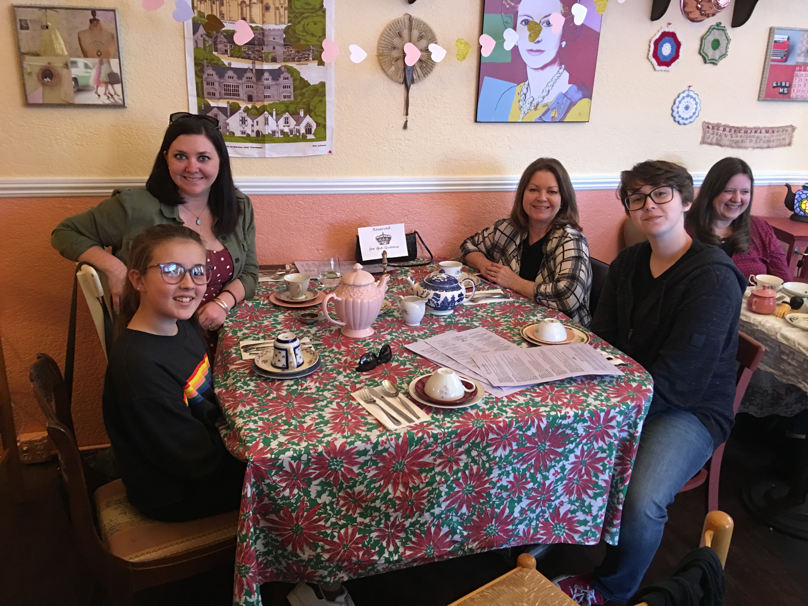
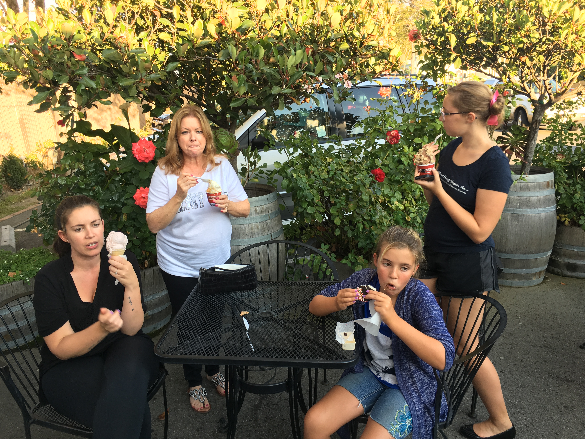
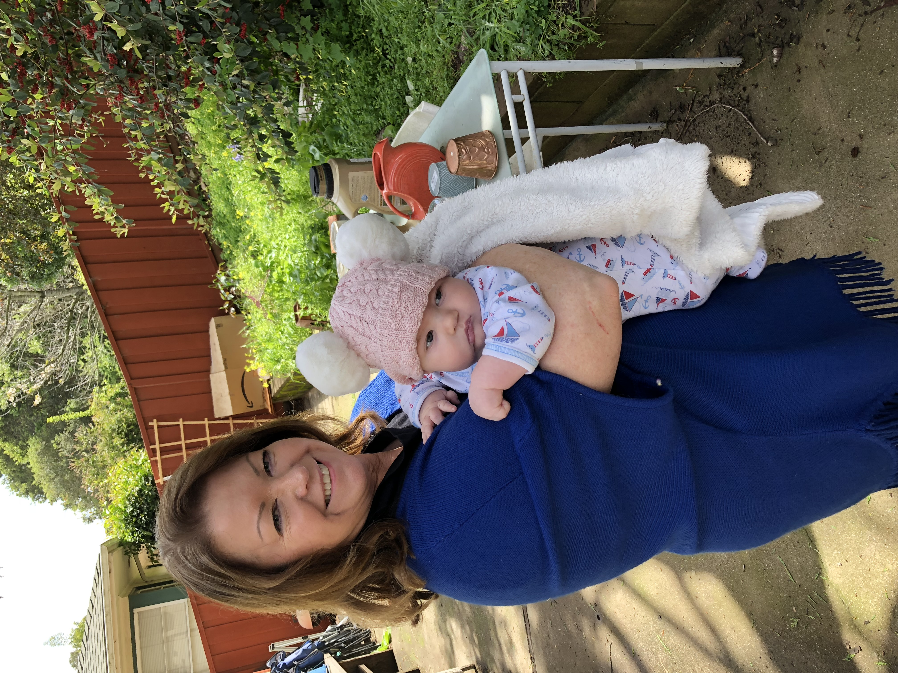

Reserved for the Queens
The tea, the teapots, the generations gathered around one floral tablecloth — only the most important women in our lives get a seat at this table. You always turn the ordinary into something worth remembering.

Sweeter Together
An evening out, roses blooming behind you, a cone in one hand and the people you love on every side. This is what you’ve given us — the small, sunlit moments that add up to a beautiful life.
First Light
The way you look down at him. All the love in a single glance. Grandma suits you perfectly.
Home Is Where You Are
Warm floral print, warmer smile. Wherever you sit down and open your arms, that’s home for all of us.

Sunshine & A Little Pink Hat
Spring in the garden, a bundle in your arms, pure joy on your face. You make every season feel like the good one.
Little Adventurer
They grow so fast — and you’re right there for every stage, patient and proud, always ready for the next little face that comes crawling into the frame.
Slow Afternoons
A sun-dappled porch, a little one tucked into your lap, nowhere to rush off to. This is the kind of peace you’ve always created for the people you love.
Never Too Grown-Up to Be Silly
Christmas lights on your head, tongue out, eyes twinkling — this is the Debbie Jean we adore. The one who reminds all of us not to take anything too seriously, least of all ourselves.
Golden Hour
The sky turning to honey, the skyline in the distance, the person beside you who loves you most — a moment that looks exactly like the life you’ve built. Here’s to many more sunsets, and every single one of them with you in the frame.